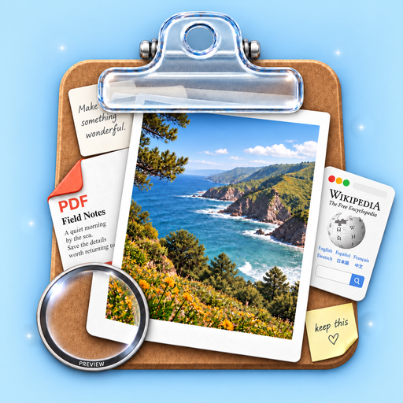
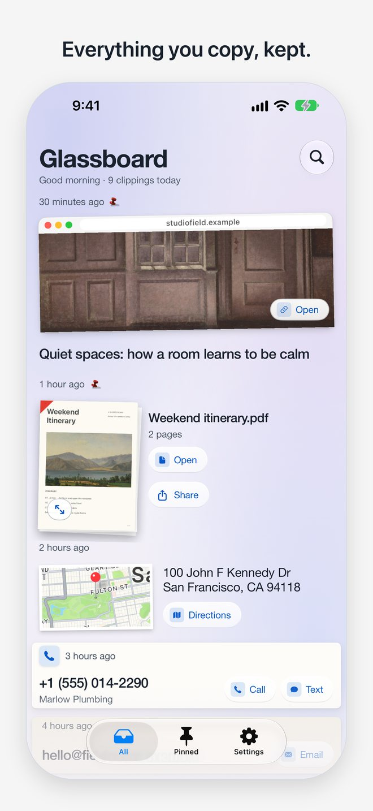
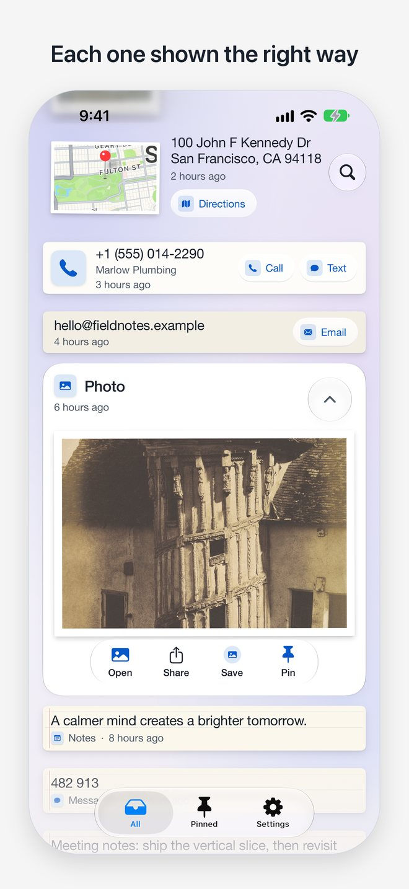
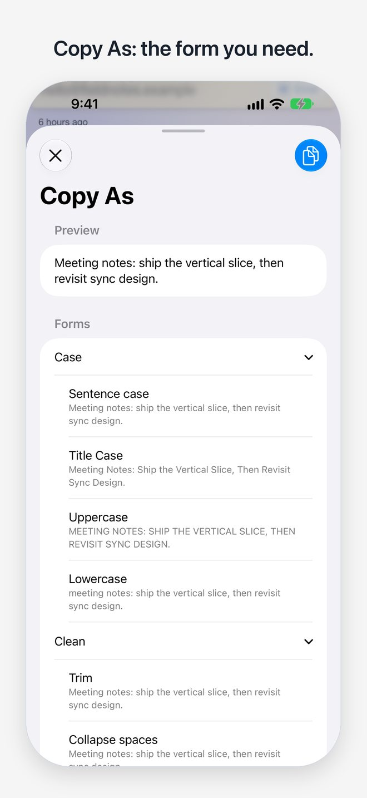

Glassboard
Everything you copy, kept and ready to copy again in a tap.
For iPhone and iPad.



Your clipboard, with a memory
Copy text, links, photos or PDFs in any app, then open Glassboard. Your history is waiting, with the useful details already picked out: addresses, phone numbers and one-time codes.
Tap to copy again
Tap any clipping to put it back on the clipboard. Touch and hold for more, like Copy As.
Pin what you reuse
Swipe right to pin a clipping. Swipe left to delete it, with Undo for a moment.
Save from anywhere
The share sheet saves without leaving your app. Control Center, the Lock Screen, the Action Button and Back Tap open Glassboard for a moment, then save.
Widgets
Keep your latest clipping on the Home Screen or Lock Screen, one tap away.
Search the way you remember
Describe what you copied and find it, using the language model built into your device.
Two pages when there is room
Open a foldable flat and your history sits on one page, your clipping on the other.
Private by design
Glassboard does not collect your data.
- No account, no analytics, no ads and no tracking.
- Your history stays on your device, and in your own iCloud if you turn it on.
- It reads the clipboard only when you open it, never in the background.
- Passwords, keys and codes are kept out of suggestions and previews.
Read the full privacy policy.
On all your devices
With iCloud on, your clippings follow you between iPhone and iPad on the same account. If iCloud is out of reach, Glassboard keeps working and tells you.